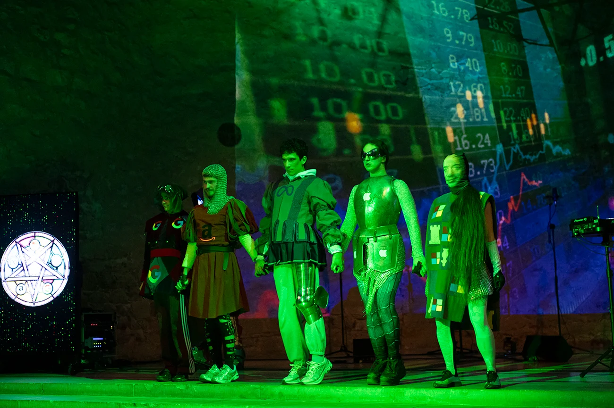
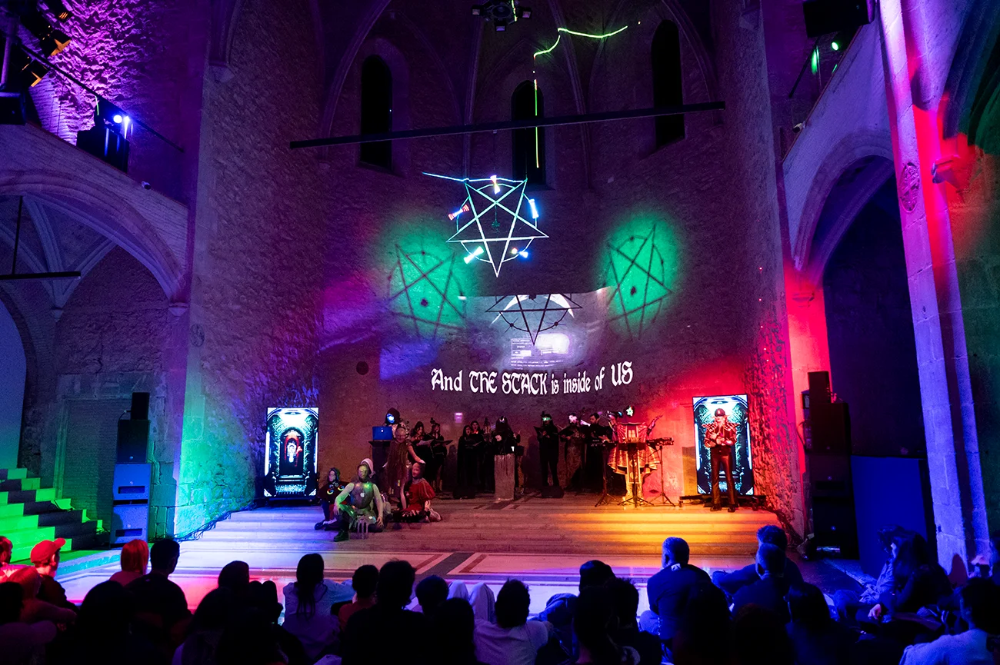

CYBERMEDIEVAL (2026)
Cybermedieval es un periplo, un escáner, un portal, una dimensión, un tiempo. Un escenario especulativo sci-fi fantasy en el que las empresas tecnológicas han sustituido al modelo estado-nación territorial y dirigen el mundo a través del control del Big Data. El capitalismo ha devenido tecnofeudalismo. Las corporaciones Big Tech se erigen como reinos y sus soberanos son los CEO, los algoritmos y las IA que gobiernan a una servidumbre digitales, les USERF (user + serf, ‘usuario + siervo’), a través de unos pactos de “términos y condiciones” que permiten utilizar las tierras de los lores vectorialistas (las plataformas de datos) a cambio de cultivarlas con la producción incesante de contenido y la datificación de los cuerpos.

